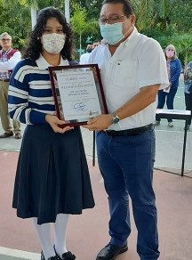
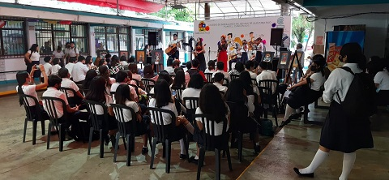

El Colegio de Bachilleres plantel Cancín dos es una excelente opción educativa para los estudiantes que concluyen la secundaria, ya que ofrece una formación integral, preparándolos para la vida, el trabajo y los estudios superiores. Los estudios de bachillerato que imparte son reconocidos en todo el territorio nacional por las instituciones de nivel superior. Además es una de las escuelas con mayor prestigio y sus alumnos y profesores son reconocidos a nivel nacional.

Experiencia Laboral
Al estudiar en el Colegio de Bachilleres Plantel Cancún Dos tu te forjas como un buen estudiante, todo esto desde una perspectiva personal.Considero que al estudiar en este Colegio aprendes nuevas cosas tanto academicas como personales, durante mi estadía aprendí mucho de todas las materias y los Porfesores son muy buenos, siempre están al tanto de sus alumnos y academicamente saben mucho de sus materias, no solo eso,sino que tambien nos forjan a nosotros como estudiantes, nos ayudan a desenvolvernos en la clase y preparanos para luego nuestra vida universitaria, tambien las instalaciones son muy buenas y siempre está en mantenimiento, en el ambito personal aprendes sobre tus habilidades y capcidades que tienes no solo como estudiante, sino como persona. En conclusion, es una buena escuela para cualquier estudiante dispuesto a esforzarse por una buena educación.
Mision y Vision
Mision:Formar bachilleres mediante un proceso educativo certificado bajo estándares internacionales de calidad, favoreciendo el desarrollo de las competencias para la vida y su incorporación a la educación superior.
Visio:Año 2017, somos la mejor alternativa de Educación Media Superior en el Estado, incorporada al SNB (sistema nacional de bachillerato).

Eventos
El colegio de bachilleres planetel cancun dos hace muchos eventos para que los alumnos puedan convivir, no solamnete los alumnos si no los maestros tambien, algunos de los eventos que puedo mencionar que ha hecho el planetl son actividades donde se reunen todos los paraescolaes(danza, pintura, basquetbool...), tambien hacen enventos de competencia, un claro ejemplo fue el que apenas hicimos con el grupo 6B que fue del estado de quintana roo, hacen tardeadas, tambien, en el caso de los de ultimo semestre hacen convocatorias de universidades o inlcuos las universidades nos invitan, entre otras cosas mas. todo esto nos ayuda como estudiantes y es un rasgo caracteruztuco del Colegio de Bachilleres Plantel Cancun Dos.